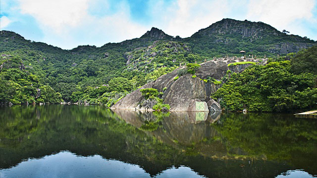

Garadia Mahadev Temple is a noted shrine of Kota, located near the Chambal River. It is located near the NH-76 that leads to Dabi and Chittorgarh. If you are someone who enjoys spectacular views, then this place does not disappoint. It provides one of the most mesmerising views you can hope to find of the Chambal River, gorge and the plains. The shrine can be reached by descending a few steps where you can pay your respects to Lord Shiva. The place is a tad remote and isolated from regular tourist hotspots but is worth the journey you have to make. Most people recount being stunned by the sheer beauty and memorable view. Thanks to the privacy and view it affords, this spot is quite popular as a picnic destination. Nature lovers can sit here for hours, absorbing its tranquillity and pristine beauty. Budding poets, writers and artists can count on being inspired by the still, blue waters and surrounding wilderness. If peace, blessings, natures splendour and privacy is what you are looking for, you wont find a better place than this.
1.RANAKPUR TEMPLE

2.MAHARANA PRATAP MUSEUM

 Pratap Singh (9 May 1540-29 January 1597) was the ruler of Mewar, a region in north-western India
in the present day state of Rajasthan. His birth anniversary (Maharana Pratap Jayanti) is celebrated
as a full-fledged festival every year on the 3rd day of the Jyestha Shukla phase. He was the eldest
son of Maharani Jaiwanta Bai and Udai Singh II, founder of Udaipur. He belonged to the Sisodia clan
of Rajputs. Maharana Pratap Singh is widely regarded as a fearless warrior and ingenious strategist,
who successfully fought the Mughals and safeguarded his people until his death. In popular Indian
culture, he is hailed as an inspirational figure for exemplifying gallantry and resourcefulness.
He was succeeded by his eldest son Amar Singh I. This museum is all about him.
Pratap Singh (9 May 1540-29 January 1597) was the ruler of Mewar, a region in north-western India
in the present day state of Rajasthan. His birth anniversary (Maharana Pratap Jayanti) is celebrated
as a full-fledged festival every year on the 3rd day of the Jyestha Shukla phase. He was the eldest
son of Maharani Jaiwanta Bai and Udai Singh II, founder of Udaipur. He belonged to the Sisodia clan
of Rajputs. Maharana Pratap Singh is widely regarded as a fearless warrior and ingenious strategist,
who successfully fought the Mughals and safeguarded his people until his death. In popular Indian
culture, he is hailed as an inspirational figure for exemplifying gallantry and resourcefulness.
He was succeeded by his eldest son Amar Singh I. This museum is all about him.
3.MOUNT ABU

4.RANTHAMBORE NATIONAL PARK
 Ranthambore National Park is one of the largest national parks in northern India, covering an area
of 392 km. It is situated in the Sawai Madhopur district of southeastern Rajasthan, about 110 km
northeast of Kota and 160 km southeast of Jaipur, which is also the nearest airport. The nearest
town and railway station is at Sawai Madhopur, about 11 km away. The park is also close to the
Kota railway station. RIDCOR operates a mega-highway between Kota and Ranthambhore. Ranthambore
National Park lies at the edge of a plateau and is bounded to the north by the Banas River and
to the south by the Chambal River. It is named after the historic Ranthambhore fortress, which
lies within the park.Ranthambhore was established as the Sawai Madhopur Game Sanctuary in 1955
by the Government of India and was declared one of the Project Tiger reserves in 1973.
Ranthambore became a national park in 1980. In 1984, the adjacent forests were declared the Sawai
Man Singh Sanctuary and Keladevi Sanctuary, and in 1991 the tiger reserve was enlarged to include
the Sawai Man Singh and Keladevi sanctuaries.Ranthambore wildlife sanctuary is known for its
tigers and is one of the best places in India to see these animals in their natural jungle habitat.
Tigers can be easily spotted even in the daytime. The best times for tiger sightings at Ranthambore
National Park are in November and May. The park's deciduous forests are characteristic examples
of the type of jungle found in Central India. Other major wild animals include leopard, nilgai,
wild boar, sambar, hyena, sloth bear, southern plains gray langur, rhesus macaque and chital.
The sanctuary is home to a wide variety of trees, plants, birds and reptiles, as well as one of
the largest banyan trees in India.
Ranthambore National Park is one of the largest national parks in northern India, covering an area
of 392 km. It is situated in the Sawai Madhopur district of southeastern Rajasthan, about 110 km
northeast of Kota and 160 km southeast of Jaipur, which is also the nearest airport. The nearest
town and railway station is at Sawai Madhopur, about 11 km away. The park is also close to the
Kota railway station. RIDCOR operates a mega-highway between Kota and Ranthambhore. Ranthambore
National Park lies at the edge of a plateau and is bounded to the north by the Banas River and
to the south by the Chambal River. It is named after the historic Ranthambhore fortress, which
lies within the park.Ranthambhore was established as the Sawai Madhopur Game Sanctuary in 1955
by the Government of India and was declared one of the Project Tiger reserves in 1973.
Ranthambore became a national park in 1980. In 1984, the adjacent forests were declared the Sawai
Man Singh Sanctuary and Keladevi Sanctuary, and in 1991 the tiger reserve was enlarged to include
the Sawai Man Singh and Keladevi sanctuaries.Ranthambore wildlife sanctuary is known for its
tigers and is one of the best places in India to see these animals in their natural jungle habitat.
Tigers can be easily spotted even in the daytime. The best times for tiger sightings at Ranthambore
National Park are in November and May. The park's deciduous forests are characteristic examples
of the type of jungle found in Central India. Other major wild animals include leopard, nilgai,
wild boar, sambar, hyena, sloth bear, southern plains gray langur, rhesus macaque and chital.
The sanctuary is home to a wide variety of trees, plants, birds and reptiles, as well as one of
the largest banyan trees in India.©Copyright-2018 Hamara Rajasthan.com. (All Rights Reserved)